TransX：把推荐模型的计算分配与执行复用放到同一个设计里
论文：TransX Technical Report: Scaling Sequence Transduction for Recommendation。作者为 Da Xu、Liyan Fang、Divya Venugopalan、Sunny Hsu、Xukai Wang、Rishav Chowdhury、Cindy Liang、Nishant Lakshmikanth，机构 LinkedIn。arXiv 首次公开于 2026-10-14，本文精读日期为 2026-10-19，覆盖技术报告全部 73 页及附录 A–E。唯一论文入口：arXiv:2610.20913。代码与独立项目页：本轮未核验到独立代码入口；不能据此宣称闭源或不存在代码。以下数字来自论文报告，属于单一生产产品的实证。
增加行为序列长度和模型容量时，哪些计算真正改善推荐质量，哪些历史计算可以跨前缀、候选和请求复用，能否让推荐质量继续提升而不让在线服务成本同比增长？TransX用候选无关的因果编码、有限行为记忆与候选条件融合三种独立角色，同时定义容量分配轴、训练复用边界和离线／近线／在线执行边界。
目录：
1. 背景和问题
工业推荐的规模扩展有两个时常被混为一谈的方向：一是让模型看到更多、更长的历史，二是让模型对当前候选做更充分的条件推理。把序列加长、Transformer加深，确实可能得到更好的表示，但如果整段历史在每次请求时重新编码，成本就跟随请求量增长。同一用户在分页或短时间多次访问时，行为历史可能几乎不变；一次请求又可能要评分数百到上千候选。用户侧计算能够复用的次数，远高于单条训练样本或单个候选所呈现的次数。论文首先把这种不同步的时钟结构写清楚，然后再讨论模型扩大应把预算放在哪里。
现有长序列方法也不是都在逐候选重复计算。HSTU等系统已经利用因果序列状态，MIMN/UIC有行为触发的记忆更新，SequenceO1采用压缩用户草图，LLaTTE将异步用户模型和在线目标感知排序分开。TransX不应被理解为首次提出缓存或异步计算。它的切入点是把编码、可读记忆和候选交互作为三个不同资源，令同一组计算与状态边界同时约束训练、部署、版本维护和能力迁移。判断其新意应看这些边界能否共同执行，而不能只看结构图中是否出现了cross-attention。
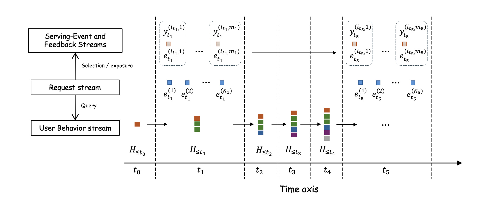
Figure 2把请求时钟与行为时钟分开。下方彩色堆叠表示用户不断生成的新行为，竖虚线是请求或观察截点；中间蓝色候选属于请求集合，上方真正得到反馈的橙色条目则只是被选择曝光的一部分。图中有行为变化而没有请求的时刻，也允许多个请求共享同一历史前缀。因而候选评分并不意味着候选均获得监督，未曝光候选不能自动标成负例。对历史的因果限制也不是“事件发生得早就可用”，而是该记录在预测时已到达并满足字段可用条件。这个建模差别影响离线打包、迟到事件回放和线上快照刷新。图中的选择／曝光箭头还提醒我们，TransX基础模型预测的是响应，最终曝光由下游策略决定；它没有仅凭点式监督解决曝光偏差或获得所有候选的反事实标签。该图提供的是问题与信息边界，不能当作系统收益的实验依据。图里较早的反馈可以成为后来请求的行为证据，但本次尚未发生的响应不能倒流进入本次查询，这也是训练回放需要记录可用时间的原因。
作者把任务称为请求条件的序列转导：输入不是一个固定长度序列对应一个类别，而是持续演化的行为流被一串请求反复查询，每次请求带来自己的候选集合。用户在搜索、资料浏览、连接等行为中积累长期与短期偏好，请求之间的间隔并不等于行为之间的间隔。将两条流强行对齐，会隐藏同一历史在多个请求间可复用的事实，也容易在训练时误把最终曝光位置或后来补齐的行为字段带进此前的评分过程。模型预测接口必须同时指定行为截止点与预测时刻可用的请求特征。
摊销为何有可能改变服务经济性，可以用原文第9页的近似分解理解：
符号解释：$\lambda_b$是行为更新速率，$\lambda_q$是推荐请求速率，$C_\Delta$是增量推进并发布状态的成本，$C_{\mathrm{req}}$是请求级共享状态准备成本，$\bar K$是平均候选数，$C_{\mathrm{cand}}$是单候选读取与预测成本，$C_{\mathrm{hist}}(l)$是在线重建长度$l$历史的成本。式子说明历史计算由请求驱动改为行为变化驱动，同时历史成本不进入候选数乘子。它只是工作负载分解，没有把存储、传输、失败恢复与双版本部署都折成同一价格，因此不能直接代替总成本核算。
这种设计也有明确适用条件。若用户行为变化极快、请求稀疏，每次更新很少被读取，维护快照的收益就会下降；若候选非常少，fanout摊销也会变弱。若业务依赖毫秒级新兴趣，异步更新的延迟可能直接损伤会话质量。论文场景约每秒两万请求，每次五百至一千二百候选，恰好具有较大的共享计算空间。把其中约八成成本下降照搬到其他产品前，首先应量化行为更新率、请求率、同一状态的读取次数与所需新鲜度。
另一个问题是容量分配。编码器扩大后，输出可能被固定记忆压缩，也可能被狭窄reader读不出来；候选侧越强，是否一定要求更多记忆槽，也需要实验而不是直觉。TransX将编码计算、记忆分辨率和融合计算分别扫描，避免把所有模块同比扩大。它研究的是特定数据、监督和架构下的经验分配曲面，而不是提出一个跨产品通用的推荐缩放指数。后文的训练吞吐、业务A/B和服务成本应分别阅读：它们回答不同问题，不能用其中一个大数字替代其他证据。
从研究路线看，简单用户向量与完整候选感知编码代表两种不同取舍。前者查询快、易缓存，却可能在压缩前不知道候选需要哪部分证据；后者能够针对目标做交互，但如果目标影响整段编码，就难把历史结果跨候选共享。TransX选择在有限记忆前保持候选无关，候选条件性放在记忆之后，因而承担了显式信息瓶颈。记忆槽不仅是节省显存的参数，也定义了所有下游能力能够接触的证据上限。足够强的reader无法从已丢失的状态恢复某条精确行为，这也是为何必须同时扫描记忆分辨率，而不是只调整网络参数量。
训练侧还有与服务侧相似的重复：同一用户的多个曝光事件常常拥有大量重叠历史，若只按事件组织样本，一次batch内也会多次计算相近前缀。把候选分组只消除了同事件冗余，还没有消除跨事件前缀冗余。另一方面，直接一次编码全部轨迹也不充分，因为需要在每个历史截止点取得合法记忆、正确处理局部窗口及全局块边界，并把所有监督梯度送回同一编码轨迹。论文要改进的环节因此同时涉及样本组织、模型接口、分布式执行与线上状态生命周期，单独复现网络前向只能验证其中一小部分。对于已有高性能推荐框架，首先评估当前哪些复用已经实现，才能确认新方案提供的增量。
2. 方法
2.1 行为编码：以字段可用性定义因果前缀
行为token保留交互实体、动作、历史发生时的上下文、数值属性、已有预训练表示，以及事件时间和记录可用时间。分类特征经各字段嵌入，多值字段先池化；数值字段规范化，外部表示经各自投影，缺失值有显式标记，再通过MLP与层归一化生成统一宽度的token。历史上下文属于该行为发生时的环境，当前用户、候选和请求上下文则从候选查询与预测头进入。二者在语义上分离，可以避免把当前请求信息污染为可跨请求复用的历史状态。
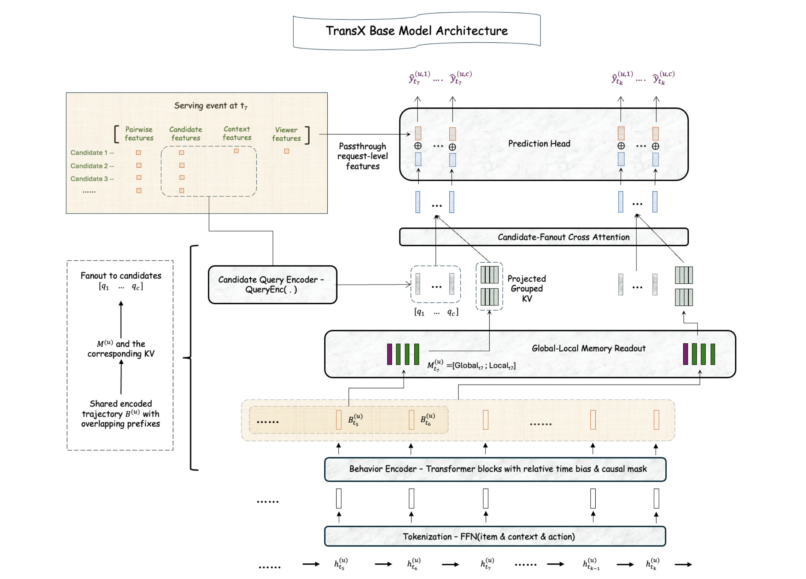
Figure 3从下往上读最清楚：最底部行为记录先变成token，进入带时间偏置和因果掩码的编码器，形成跨事件共享的轨迹表示；不同请求截止点从轨迹取得各自全局与局部记忆，再按reader层投影为分组KV。左侧当前请求的候选与上下文走独立query encoder，产生候选查询，最终在中部读取同一份记忆。顶部预测头不仅收到读取后的行为证据，还收到绕过序列路径的请求级、用户级、候选和成对特征。图中虚线框标出的扇出对象是共享记忆及KV，而不是为每个候选重新执行编码器。不同截止点的记忆可以不同，同一截止点内的候选则共享它。reader仍为每个候选独立计算注意力，因此共享并没有把所有候选压成一个用户向量。这个结构也解释为何编码宽度、记忆槽数和融合宽度可独立调整：三者通过明确的接口传递信息，但不要求在规模上同步增长。它保留了候选相关证据选择，同时为系统提供可提前计算的部分；能否低成本执行还取决于后面的状态发布、缓存与调度，而不是只需替换一个注意力层。主干共享还保留当前请求的直通特征，这一点对短期情境尤其重要：页面、入口、候选属性及成对特征未必适合写进持久用户记忆，却能通过prediction head即时参与评分。记忆构造也在每个截止点发生，因此两次请求看到的全局／局部组合可以随新增行为改变，而无须使候选相互通信。图中全局摘要并不是可训练的全平台记忆参数表，而是由该用户截至当时的轨迹导出。将其与共享可训练memory混淆，会误判刷新频率、隔离粒度和存储规模。一次历史编码、多次记忆读取及候选并行三种复用的条件各异，任何一条依赖候选或未来反馈都会破坏相应共享。编码器采用标准Transformer因果自注意力、前馈网络、残差与归一化。原文式(4)–(6)的关键是相对时间偏置与可用性顺序并存：
符号解释：$r$是注意力头，$q_i,k_j$为查询与键，$d_h$为头维数，$b_r$是可学习时间差偏置，$\tilde t$为行为发生时间，$m_{ij}$禁止读取未来或填充记录。序列按记录可用时间排序，发生时间可能不单调，所以时间差可为带符号值。相同tokenizer与encoder版本、可追加一致的排序下，新增后缀不会改变既有前缀表示，因而一次完整轨迹编码能够服务多个过去截止点。迟到记录若要修正已经发布状态，必须走显式刷新或重放，而不能只把它按更早事件时间偷偷插回旧前缀。没有有效历史时，系统直接走仅使用服务时特征的非序列回退模型。
2.2 行为记忆：近期保真，远期以可合并摘要保留支持
如果每个候选都访问全部编码状态，历史侧计算即便提前完成，在线读带宽和注意力仍随历史长度增长。TransX把编码范围与reader可见分辨率分开：局部部分保留最近$W$个精细状态，较早历史按因果块聚合为不超过$R$个全局摘要，二者投影到公共记忆宽度。这里压缩的是在线接口，编码器仍可以处理长历史；压缩是否丢失当前任务的重要信息必须由质量评估决定。
符号解释：$B_t$是截止点$t$的编码轨迹，$l_t$为可用记录数，$L_t$为局部状态，$G_t$为较老历史的全局摘要，$M_t$为候选读取记忆，$\psi_{\mathrm{mem}}$适配输出维数，$n_t$是实际有效槽数。每个记忆槽的来源支持必须包含在$\{1,\ldots,l_t\}$，否则汇总本身就泄漏未来。短历史无需补造满额槽位。论文主配置为32个局部状态加最多32个全局摘要，长短历史可采用不同基础块宽，槽数有限不等于只保留有限个原始行为。
附录A.2补足了一个容易误解的情况：当远期历史超过$R$块的支持范围，系统用同一关联池化运算两两合并相邻块，逐级加宽，而不是因为摘要槽满了就丢弃所有更老行为。例如最大4096条、局部32条、全局32槽、基础块宽64时，较早的4064条超出2048支持；合并一级后用31个128条块和一个96条部分块覆盖全部远期历史。这样保留的是粗分辨率支持，不保证所有原始细节可恢复。增量维护和bulk重建必须构造一致的分块及压缩层次，否则同一历史在训练与服务中可能得到不同记忆。
2.3 候选查询与迭代融合：共享KV，保持目标相关读取
候选复用与历史语义兼容的字段嵌入和tokenization接口，但采用独立query encoder。当前动作字段固定为专门的unknown-action符号，而不是已观察点击或转化动作，从输入上阻止目标泄漏。每个候选生成一行查询，所有候选行在reader中平行读取同一行为记忆。它们没有相互自注意力，也没有基础模型层面的自回归依赖，所以TransX-Base不是生成式列表排序。把第$\ell$层GQA读出写成紧凑形式如下，这与原文第13页的共享分组KV和式(9)相对应：
符号解释：$U_t^{(0)}$由候选查询堆叠而成，$M_t$在所有reader块中保持不变，$h$是查询头，$\gamma(h)$把多个查询头映射至同一个KV组，$W_Q,W_K,W_V$是各层投影，$O_t$是多头读出拼接并输出投影后的结果。后层以已更新候选状态再次查询记忆，增加交互能力，却不复制历史状态。共享存在两层：同一请求所有候选共享投影KV，不同查询头又按GQA共享KV头。共享KV投影不意味着不同候选读出相同，因为softmax权重依赖各自查询。
符号解释：$k_t$为请求候选数，$C_{\mathrm{shared}}$是一次历史／记忆计算，$C_{\mathrm{cand}}$保留每个候选真实交互成本；$L_R$是reader层数，$\phi_{\mathrm{pred}}$嵌入当前预测特征，$\operatorname{Interact}$进行特征交叉，二分类输出用sigmoid。共享成本摊到每个候选约为$C_{\mathrm{shared}}/k_t$，但候选融合本身仍随fanout增长。部署预测头使用DCNv2和Deep&Wide式交互，说明论文允许在不扩张行为记忆的情况下扩大候选侧容量。
2.4 多前缀训练：共享轨迹、批量取记忆、先归并梯度
训练复用的基本单位是轨迹及关联事件。训练基本单位由单个曝光候选改成一段用户行为轨迹及其关联事件。每个事件带预测截止点、曝光候选和已成熟反馈，同一packed unit内所有监督事件共用左边界，仅右端截止点不同。因果编码器只跑一次最大前缀，多个事件从中取出自己的合法记忆。局部分支以masked gather批量收集最近窗口，避免分别物化每个完整历史；无效位置在构造记忆前屏蔽，不能以索引截断后重复的边缘状态冒充真实记录。
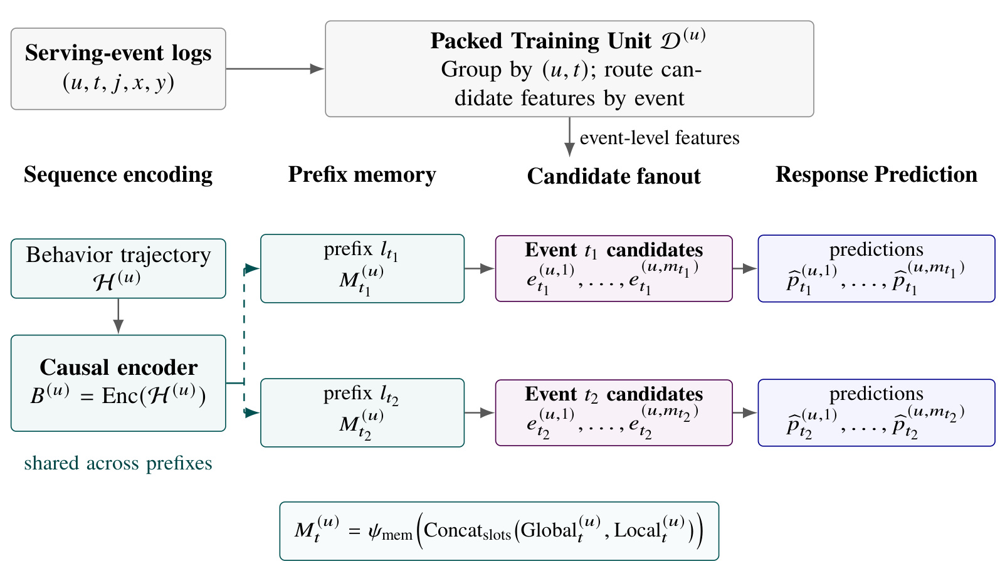
Figure 4中的行为轨迹在左侧只进入一个causal encoder，中间两条分支分别取$t_1$和$t_2$的记忆，再各自发散到当前曝光候选和预测。上方事件日志按用户与事件分组，当前事件特征沿候选路径分发。该设计把两种重复同时去掉：一个用户的重叠前缀重复编码，以及一个事件的多个候选重复构造记忆。图下的global与local拼接表明共享完整轨迹不等于让较早事件直接读取较晚的整段表示，每个截止点仍必须独立限定记忆支持。反向时，同一事件不同候选的KV梯度先求和，再经过一次KV投影及memory adapter的反向；local通过scatter-add回到共享轨迹，global通过块扫描的反向回到原位置，来自所有事件的贡献再合并。这个顺序决定优化等价性：如果每个物理fanout分片先更新优化器再汇合，即使前向预测一样，AdamW或Adagrad的非线性状态也会变化。图所说明的复用必须落实在计算图和逻辑更新边界，单纯把样本排序放近不能自动得到同样收益。相应通信只传紧凑event KV，而不是给每个候选worker传完整历史。具体而言，多个事件窗口交叠的某个行为位置会收到多份梯度，scatter-add必须保留这些贡献，不能只采用最近事件的一份。全局摘要的pooling参数也需按同样计算图累积梯度，不是把缓存当常量切断训练。图中事件间共享左边界是前缀等价的前提；如果每个事件各自滑动截取不同左界，其上下文化状态便不能简单互换。由此实现节省的是物理重复工作，模型仍保留所有选中事件对应的逻辑损失。这样的等价要求比常见批量用户去重更严格，应在小规模样本上同时比对前向记忆和反向梯度。全局摘要使用可关联的充分统计，令一个区间$I$内注意力打分为$a_i$：
符号解释：$b_i$为编码行为向量，$m_I$提供数值稳定的最大值，$Z_I$为指数权重和，$V_I$为加权向量和。相邻区间合并时先取共同最大值，再分别按指数差缩放$Z,V$并相加，得到关联运算；因此prefix scan和块归并能够复用跨截止点统计，而不改变该池化定义。关联性不表示任意两个前缀相减就能稳定恢复区间，论文采用blocked实现，并对跨块边界显式处理。原文附录给出前向记忆与独立构造等价、反向轨迹梯度也等价的执行契约。
符号解释：$u$为用户，$T_u$是该轨迹关联事件数，$\mathcal V_t$只含有效且成熟的监督位置，$y$是点击或转化反馈。原文式(13)为简洁省略全局有效目标归一化和重加权，实现中需要在逻辑step边界统一应用。稠密网络用AdamW，大型稀疏嵌入用row-wise Adagrad；后者每行一个二阶累积量，把优化器状态由行数乘维度降至行数。所有共享前缀、候选fanout和梯度累积中的同一行贡献必须先聚合再作一次更新。序列并行负责轨迹位置，fanout并行仅在紧凑event memory构造后拆候选；增加fanout并行度不再增建一个历史编码器。
2.5 分离执行与能力后训练：维护C，发布V，在线只读
离线bulk负责模型部署、回填与周期性rebase，按行为token预算和长度组成变长批次；近线由新增行为触发，按状态局部性、队列压力和新鲜度余量路由；在线由请求触发，只读取已经发布且与当前模型兼容的快照。三种角色是逻辑分工，不能从示意图的GPU框推断实际每阶段都运行在GPU；论文部署中的nearline完全运行在CPU。bulk还按留存策略重建状态，过期记录在下次rebase前可能仍影响已有表示，不能宣称在线精确滑动删除每条过期行为。
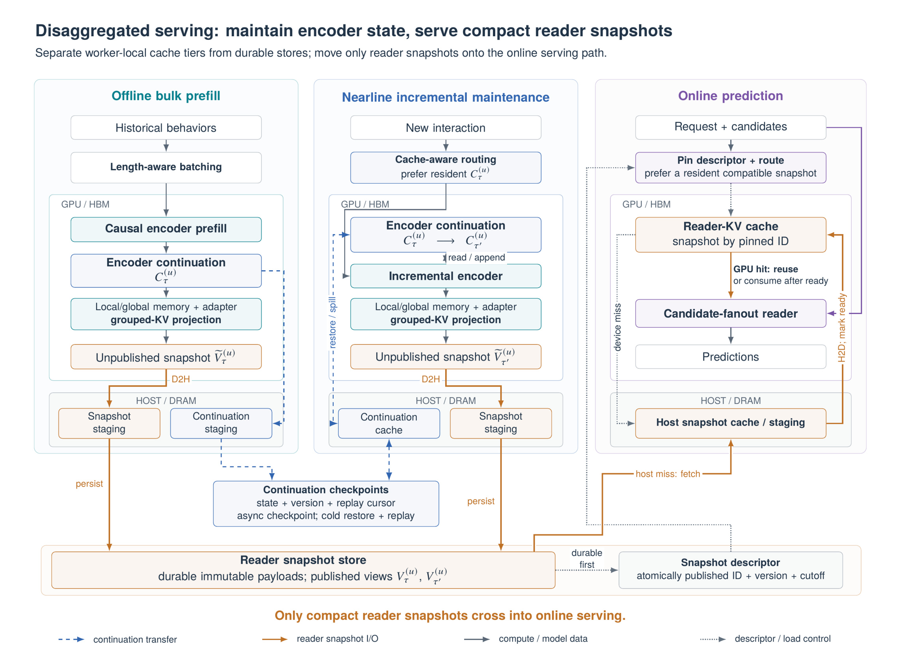
Figure 6的蓝色虚线对应continuation状态传递，橙色线对应读者快照I/O，灰色虚线是descriptor等控制通路。左、中两列持有可变编码续接状态$C$，其中包括encoder KV、时间与pooling元信息、最近输出以及重放位置；它随历史增长，供新增行为继续编码。两列都从记忆经adapter和分组KV投影生成新的不可变快照$V$，先持久化payload并校验生产状态，再原子推进用户可见descriptor。右列请求固定一个兼容snapshot ID，其全部候选批次始终使用同一份状态；缓存miss先取host或durable store，不能混入另一个刷新版本的部分内容。请求结束前快照保持固定引用，之后才可回收无引用旧版本。下方continuation checkpoint只用于维护路径恢复，在线预测不会等待恢复全部历史。因此图中三个阶段不是每次请求依次执行的串联流水线。这个分离把维护失败先转换为状态较旧或回退率上升，同时要求明确监控这些退化，而不能只监控请求成功率。版本化、原子提交和回放游标与模型结构一样重要，缺少其中一项就难保证异步复用仍符合训练时的因果输入。图还将快照store与continuation checkpoints分成两个后备存储：快照读失败时仍可用驻留版本，而owner丢失则从checkpoint与事件日志恢复之后的维护。恢复源包含cursor，避免重复应用或漏用行为；请求固定descriptor，使读写并发不会让某些候选使用刷新前状态、另一些使用刷新后状态。部署切换同样必须把模型与快照作为兼容组合固定，而不是先替换权重再等待缓存慢慢追上。上述约束牺牲了部分最新状态覆盖率来保护在线预算，退化时应同时报告新鲜度分位数与回退占比，单看成功率不足以判断质量是否保住。
符号解释：排队后，快照准备$T_{\mathrm{state}}$与稀疏特征准备$T_{\mathrm{feat}}$可并行，随后进行候选融合与预测头计算。公式没有编码器恢复项，因为该工作被放在维护侧；状态不满足预算时使用较旧但允许的兼容快照，或指定非序列模型。新模型发布还需双版本切换：bulk重建新namespace，记录回填cursor，nearline补齐其后行为，只有用户的新版本状态与新鲜度满足策略才切流；旧版本在回滚窗口内继续维护或保留足够重放日志。
KV压缩先用离线校准的正交旋转对齐能量，再在固定payload预算下分配各坐标精度。平均4bit指方向payload，幅值与codec/layout元数据另计；它不代表最终文件恰好等于BF16的四分之一。正交旋转本身可保持内积，误差来自量化，故不能用向量重建误差直接保证排序质量。packed与expanded是同一逻辑快照的本地执行格式：前者少占HBM但重复解码，后者首次解码后多次读取；位于磁盘、host还是GPU是另一个独立决策。更高保真KV要从保留的兼容记忆重新生成，反复转码旧有损payload不会恢复已丢信息。
能力后训练冻结行为tokenizer、encoder和记忆构造，只训练任务reader及输出。Retrieval用当前上下文查询一次记忆，生成128维用户向量，与独立item索引用InfoNCE匹配；同事件成熟非正例及去重batch负例构成监督。Ranking保留候选条件结构，换成事件归一的Bradley–Terry偏好目标，只比较成熟且可排序反馈，平局不生造pair。GenRet让decoder状态跨注意力读取同一记忆，逐token生成层级SID；GenRank先计算候选表示，再由轻量自回归decoder生成去重slate，针对已选列表给候选分数加残差。生成两类以AR加DPO训练，但仅离线探索。共享的是模型侧$M$，任务reader投影不同可产生不同$V$兼容版本，不能假设所有任务直接共享同一个KV索引。冻结主干也不是理论上总优于联合训练，只是本次可复用与部署权衡。
3. 实验结果
3.1 计算分配：监督增加后融合更有价值，但不是通用缩放律
第6节与附录C把历史支持和监督量分开控制。三组历史长度为64–252、253–996、997–4096条；基准有效目标十亿，监督比例0.20、0.25、0.30对应两亿、两亿五千万、三亿成熟候选目标。每个历史群组内按整事件抽样，所有架构配置共用数据与留出集。编码器扫1、2、3、4、6、8层，融合宽度128至1024、深度1至5，记忆预算约8至256 KiB。逻辑batch为8192目标，一次遍历对应约2.44万、3.05万、3.66万更新。因此监督量增大也增加训练更新次数，不能把收益完全解释为“数据多样性提高”。
符号解释：$d$为历史支持与监督组合，$\nu$是实测轨迹复用密度，稀疏、中、丰富历史约为64、255、2055个目标／轨迹；$C_E$原本按轨迹计，除后才与每候选融合成本$C_F$可在训练分配轴比较。$Q$为留出质量，$g$是相邻实测点的有限差分，不是连续导数或普适指数。$C_{\mathrm{eq}}$也不是线上成本，因为encoder维护和在线候选发生在不同速率下。
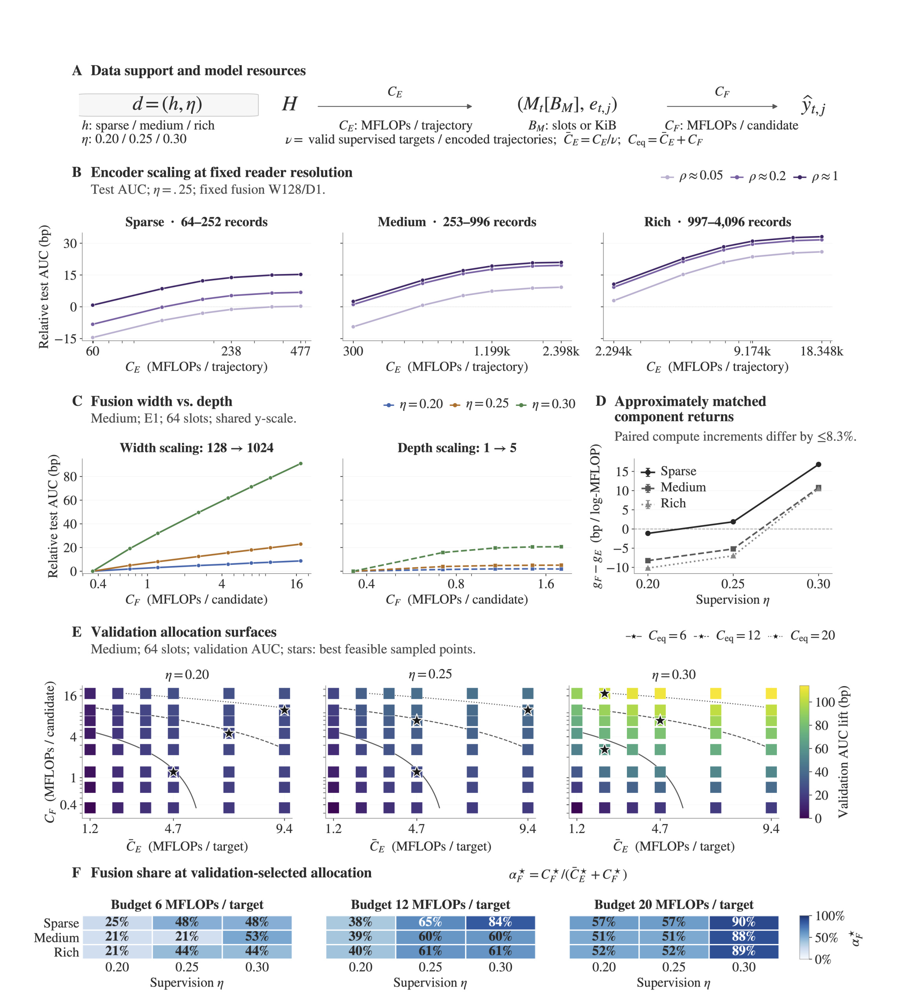
Figure 7含六组互相约束的证据。B在固定记忆与融合下扩大encoder，三类历史均先改善后收益递减，约四层后饱和更明显；不同颜色是不同记忆密度，说明增加编码计算的效果并不等于简单暴露更多记忆。C比较fusion加宽与加深，宽度在测试范围内更持续获益，更多reader层较早饱和，而且高监督曲线更陡。D把encoder成本按复用密度折到每目标后比较近似匹配增量，两侧增量仍有最多8.3%偏差，不能称完全精确matched FLOPs。E的星号是验证集中有限网格的预算内最优点，不是连续最优解。F中中等历史、12 MFLOPs预算的融合占比从39%到60%再60%，20预算则从51%到51%再88%；结果支持方向性移动，但并非每个监督档位严格上升。图的可信解释是额外容量的边际收益各向异性，并依赖数据支持，不能推出“推荐系统总应把大部分计算移向fusion”。完整网格每点一次训练，部分配置三种seed复验，误差解释也应限于复验点。因而实际扩容应保留对两个方向的实测对照，尤其不能在原始轨迹FLOPs与候选FLOPs未统一分母时直接比较斜率。
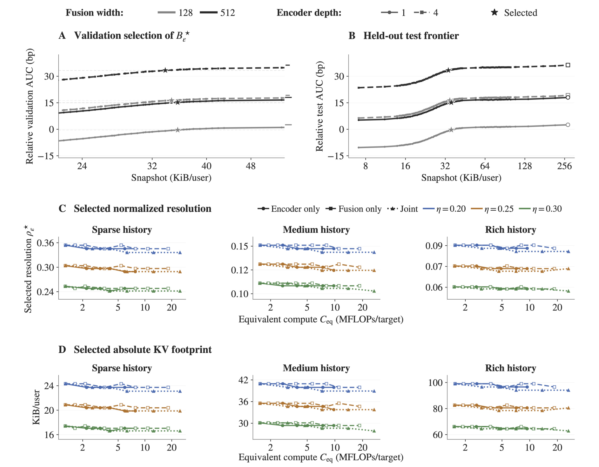
Figure 8的星号有特定参照：对同一encoder、fusion及数据条件，寻找与该配置最高分辨率记忆质量相差不超过三AUC基点的最小已测预算。A在validation选择，再把对应点移到B的held-out test，避免直接在test挑最小记忆。C报告槽数除历史长度的平均密度，D补上固定注意力宽度和精度下的绝对KiB；后者很必要，因为历史增长本身就能让相对密度机械下降。图中扩大编码、融合或联合计算后，所需密度总体近似稳定或略降，绝对足迹也没有同比增长。它说明模型能力与在线持久接口可以分开扩张，但没有证明记忆从此无需调参，也不能把不同模型的最高分辨率结果当成相同绝对质量目标。容差改为两、三、五个基点时选中配置最多移动相邻一档，支持定性稳定。实验保持固定记忆家族与任务，对于多兴趣、多模态、长周期目标是否仍如此，原文没有给跨产品验证。这里的BF16预算扫描与部署平均4bit的压缩足迹也是不同实验设置，不能用两者差值推断模型扩容自动提高压缩比。
原文第33页用总体log-loss给出一个精确分解，帮助理解压缩与读出为什么是两个瓶颈：
符号解释：$H$是原始可用历史，$X$是当前候选与请求上下文，$M=f_\phi(H)$是确定性记忆，$Y$为响应；第一项是完整输入仍无法去掉的不确定性，第二项是压缩记忆后丢失的条件任务信息，第三项是有限reader与真实记忆条件分布之间的错配。加强encoder可能改善保留信息及其可读性，固定记忆映射下增大fusion主要改善读出错配。该等式针对log-loss及固定分布，并没有证明AUC随其中某项必然改善，也没有从数学上推出encoder恰好四层饱和。它为实证提供分解视角，不能把观察结果包装成定理。
3.2 离线质量与能力后训练：行为表示能够迁移，生成式仍探索
生产骨干约一亿稠密、三亿稀疏参数。附录E给出四层1024宽encoder、32注意力头、4096宽FFN，memory为32local加最多32global，reader为两层、32查询头与4KV头、头维32。数据按时间划分，验证与测试各一周，反馈终止日留足成熟窗口；行为回溯180天、最多8192 token。点击训练每正例最多五个采样负例，转化最多一个，某任务没有正例的事件被舍弃，验证测试使用自然标签分布。低历史用户被排除、极长尾用户被降采样，故离线分布并不等于线上所有冷启动与极端历史用户，质量外推需要保留这个选择边界。
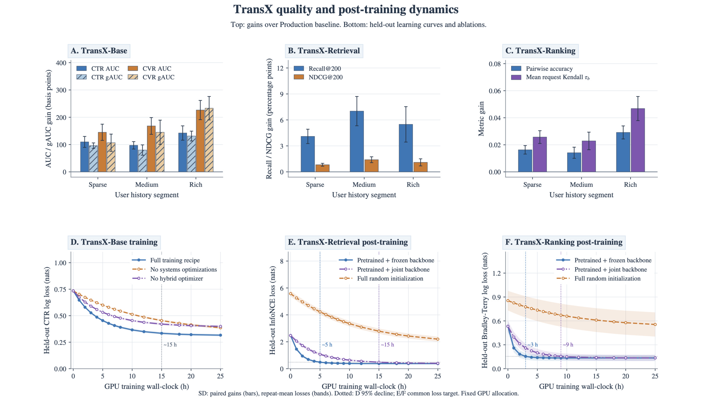
Figure 9上排分别以各自生产基线衡量响应、检索与偏好任务。Base的点击／转化AUC及按用户不加权平均的gAUC在三个历史群组均为正，丰富历史的转化收益更大；Retrieval的Recall@200和NDCG@200改善不能直接换成CTR提升，它们是离线排序指标，且多样性ILD未下降。Ranking改善pairwise accuracy和请求级Kendall相关，说明读出能学习产品偏好顺序。下排用匹配GPU时间比较优化路径：共享预训练表示比完全随机初始化更快达到较低检索InfoNCE和排名BT损失，冻结骨干又比联合继续优化更快到达图内共同损失目标。图中约五小时对十五小时、三小时对九小时是特定后训练曲线的目标标记，不能替代全流水线二十五到十三小时的训练收敛结果。该图支持“表示能迁移”而非“只换输出头就普遍支配从头训练”，其结果仍依赖相同数据构造与特定下游目标。图上的误差条对应重复训练的配对增益或均值损失标准差，不是全部生产用户效果的置信区间。条形正增益与损失曲线变快分别回答质量和训练效率，不能只凭横轴时间认为线上每请求也会更快。
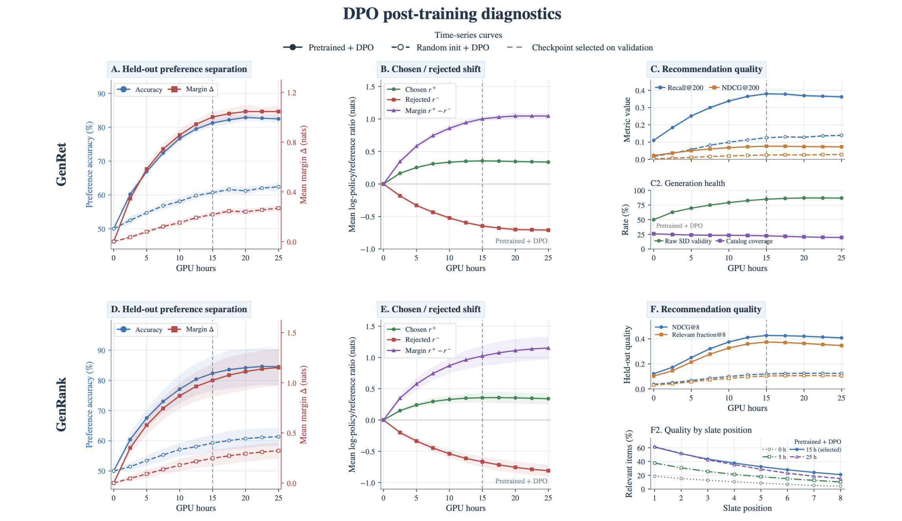
Figure 10上排是GenRet，下排是GenRank，实线预训练加DPO普遍优于随机初始化加DPO。A、D的偏好准确率与chosen–rejected margin来自教师构造的偏好，含义是更符合该教师，不能等同独立用户效用；B、E显示chosen相对参考模型概率上升、rejected下降，验证优化确实产生分离。C的推荐指标在采样候选池上算，旁边生成健康度显示原始SID有效率仍未达到百分之百，覆盖率还有下降趋势；F的列表后位质量弱于前位，继续训练也并非所有位置都持续改善。因而平均训练目标改善不能抹去无效ID、热门集中和自回归误差传播。论文明确生成变体不是与判别式matched-budget优劣证据，也没有上线A/B；应把它看成共享行为接口容纳不同输出几何的可行性实验。约十五小时虚线是验证选择检查点，后续曲线略退化进一步支持不能只读末点最高偏好margin。附录明确指出GenRet还可能更集中在热门物品，GenRank对后位决策和教师覆盖更敏感。这些失败模式与图中目录覆盖及位置质量相呼应，构成采用前必须专门监测的质量维度。
具体设置有助于理解这些诊断：Retrieval同事件负例每正例最多八个，温度0.02；Ranking每事件最多16对、温度1、pair均匀加权并事件归一。GenRet的SID由三层各2048词表的balanced k-means加去碰撞hash token组成，decoder独立训练，不能误写为从Base候选reader直接继承生成decoder；解码用前缀Trie约束、beam16。GenRank最多八位置，先采八条slate，以独立成熟反馈split训练并冻结的教师打分，只保留超过偏好margin0.22的同长度pair，再作AR加DPO。教师质量、负例策略和采样池都可能影响离线表现。
3.3 三组生产A/B：不同对照，不能相加或解释为级联累计收益
三个实验分别对应主要页面的Base、检索源的Retrieval，以及通知／邮件等面的Ranking。Base对照为在线处理历史的HSTU-style生产模型，历史180天但上限512 token；检索对照为Transformer EBR、1024 token、128维匹配、ANN top200；排名对照为基于工程聚合与序列特征的LtR DLRM。它们不是同一条同质基线，主模型变化也包括历史窗口上限与系统执行差别。实验一般用户级随机化、至少七天，处理与对照各约20%合格流量、约二十亿请求，适用时CUPED，主要估计量按用户聚合，转化是七日归因。不同面可用正交随机化重叠实验，但不因此可把三个lift求和。
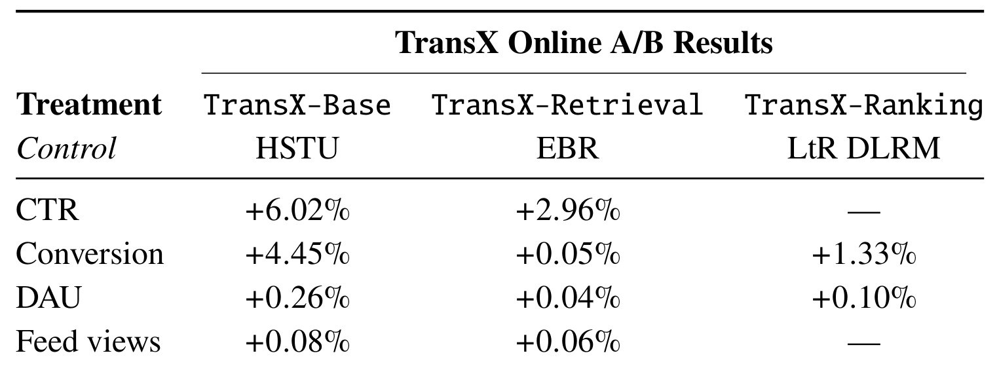
Table 7中Base相对HSTU的CTR为+6.02%、conversion为+4.45%，DAU为+0.26%、feed views为+0.08%；Retrieval相对EBR的CTR为+2.96%，转化仅+0.05%、DAU+0.04%、views+0.06%；Ranking相对LtR DLRM的转化+1.33%、DAU+0.10%，CTR与views未报告。破折号表示缺项，不能当作零或负结果。所有数字是相对百分比而非绝对百分点，表注除feed views为$p<10^{-2}$外其余所报lift为$p<10^{-4}$。大样本显著性不等于实际效应同样大，尤其检索转化+0.05%远小于其CTR改善。最容易误读的是把Base和Retrieval的CTR相加成某个整体收益，或把Base和Ranking转化相加；每列的对照、面和干预都不同，原文不提供这种联合因果估计。五周Base holdout观察到收益持续，是稳定性补充，仍不代表所有任务都运行五周或产生同样持续效应。此外，原文只给出统计显著性门槛与相对lift，未在此表提供每组绝对CTR、效应置信区间和完整收入等指标，因此不能由6.02%反推出点击率增加了多少绝对百分点，也不能自行补出未报告的商业回报。论文强调的是从已在服务的生产系统迁移，基线并非简化的离线小模型，这提高工程参考性，同时也让模块级因果归因需要额外消融。
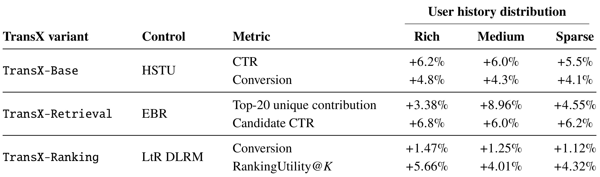
Table 8把各实验按历史支持分群。Base在丰富／中等／稀疏人群CTR分别+6.2%、+6.0%、+5.5%，转化+4.8%、+4.3%、+4.1%，与长历史更能受益的解释一致，但稀疏组仍为正。Retrieval的Top-20 unique contribution依次+3.38%、+8.96%、+4.55%，Candidate CTR依次+6.8%、+6.0%、+6.2%，前者是每请求前20曝光里该源独占贡献数量的相对变化，后者分母是该源贡献候选的曝光，不是全产品CTR。Ranking转化依次+1.47%、+1.25%、+1.12%，utility依次+5.66%、+4.01%、+4.32%。两种检索指标在中等群组表现不同，提醒我们“历史越长收益越大”并不适用于所有指标。群组lift也不能简单平均还原整体值，因为用户权重、基线率与指标分母不同。utility由产品固定函数定义，是本产品偏好效用；它不是通用NDCG或已公开可复现奖励函数。原文没有在此表把各群组基线人数与绝对率完整列出，因而无法仅据三列复算全量业务lift。丰富历史用户的行为支持强，不等于这类用户在所有产品目标上价值都更高；表中偏好utility与点击、转化回答的目标不同，迁移时应依据自身业务同时观察覆盖、相关性和实际反馈。
3.4 系统吞吐与总成本：把三种大数字的分母分开
训练比较固定32张H200、模型、数据、历史分布、目标采样、有效batch、优化器和精度。多截止点打包、批量记忆提取、共享prefix scan和sequence–fanout执行使监督候选目标吞吐提高84%，全流水线MFU约11%到18%，峰值GPU内存大体不变。点击／转化AUC与gAUC稳定在0.01%范围作为收敛判据时，wall-clock约25小时到13小时，耗时约减48%。这与吞吐1.84倍互为补充但不是同一测量；也不能把局部prefix benchmark的前向MFU41%到57%混成全训练MFU。局部优化还观察到行为token吞吐1.4倍、重复前缀峰值activation约5.2到2.9 GiB／设备，它们对应局部比较，未要求全模型峰值也按该比例降低。
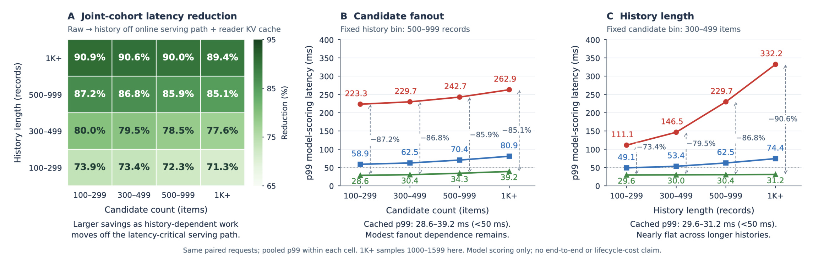
Figure 11的红色为共置历史计算，蓝色为已分离但未缓存KV，绿色为分离且缓存。A按相同请求的历史长度与候选规模联合分组，模型评分p99下降约71%至91%；B固定500–999历史时，缓存曲线随候选数从约28.6毫秒增到39.2毫秒，符合候选计算仍需逐行执行；C固定300–499候选时，历史从百条级到千条级，缓存曲线约29.6到31.2毫秒，说明完整历史长度不再主导在线模型评分。这些是model-scoring局部时间，图内明确不是端到端延迟或生命周期成本。生产端到端p99约49毫秒、每H200约250请求／秒，包含排队、特征与状态准备，不能从绿色曲线直接宣称端到端也下降91%。GPU KV命中约25%，GPU与host合计超过99%，因此低GPU命中本身并不意味多数请求要远程恢复历史。图内“1K+”抽样为1000–1599条，也不能把该局部曲线外推到任意8192历史或所有流量。蓝色曲线展示只把历史执行移出线上仍不够，快照能否及时就绪与复用依然影响尾延迟；绿色比蓝色进一步下降，说明物化状态与驻留策略共同贡献收益。该比较也提示不能把延迟降低完全归于reader结构。
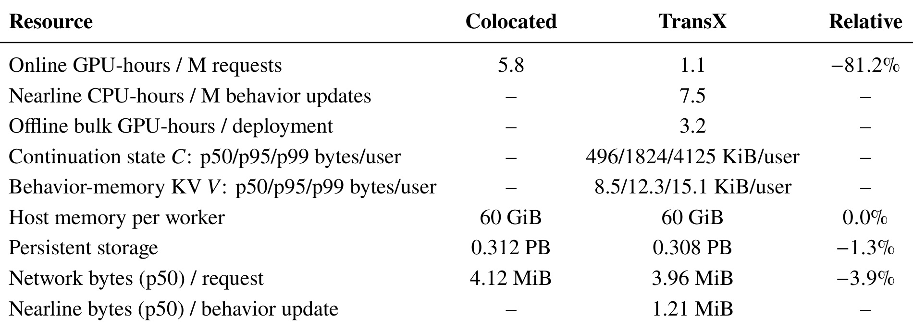
Table 10把共置与分离TransX的资源逐项列出。每百万请求在线GPU小时从5.8到1.1，下降81.2%；但近线另有每百万行为更新7.5 CPU小时、bulk每部署3.2 GPU小时，三行自然分母不同，CPU和GPU也不同，不能直接作加减得到总成本。可变continuation状态中位496 KiB／用户、p99达4125 KiB，发布KV中位8.5 KiB、p99为15.1 KiB，显示把两种状态混称“每用户缓存几KB”会严重低估维护侧存储。在线host每worker均60 GiB，持久存储0.312到0.308 PB，在线网络中位4.12到3.96 MiB／请求，近线另有1.21 MiB／更新。作者将在线GPU、近线CPU、bulk、存储与网络折成匹配流量和SLO的统一生产价格后，总服务成本从1.00降到0.22，即约78%下降；价格权重与部分绝对明细未披露，外部无法只用本表完整复算总价，也不能称完整生命周期成本。“总成本0.22”比较的是同一TransX共置与分离实现，并非原HSTU成本的表内直接相除。模型FLOPs、硬件时间和货币价格也不是等价单位；前者不含嵌入查找、通信等成本，而这些仍会反映在实际时间与费用里。若要本地复算，应先按实际请求、行为更新及每日部署频次统一每行分母，再用本地硬件和存储价格换算。
另外两个数字属于另两次比较。部署TransX在同等总服务成本下承受约为原HSTU-style生产基线五倍的每请求模型FLOPs；这里模型能力和成本一起变化，不是五倍吞吐。为了控制模型FLOPs，作者另把HSTU-style序列骨干扩大到与TransX近似相同计算，同tokenizer与prediction head、硬件、精度及SLO下，离线click AUC差在0.001内，TransX请求吞吐约四倍／H200。这支持执行布局的效率价值，但不能把五倍FLOPs乘四倍吞吐得到二十倍效果。量化的BF16中位28 KiB到8.5 KiB为约3.2倍压缩，绝对test-AUC变化在0.002内；packed形式比expanded约省3.1倍状态HBM，代价约6%额外KV kernel时间，实测同快照约4–6次读后expanded更有利，仍属特定工作负载拐点。
3.5 新鲜度与故障：低延迟靠明确退化契约维持
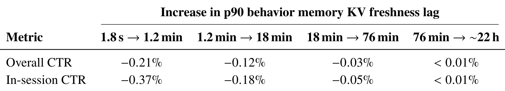
Table 9每列比较相邻两个实际p90新鲜度档位，而不是所有列均对1.8秒基准。1.8秒到1.2分钟总体CTR相对下降0.21%、会话内下降0.37%；1.2到18分钟再下降0.12%和0.18%；18到76分钟再下降0.03%和0.05%；76分钟到约22小时这一档变化小于0.01%。不能把末列解释为一天前快照相对新鲜状态几乎无损，因为前面损失已经发生，也不宜在未说明相对基线时简单相加当成累计百分点。更大的会话内短期损失显示秒级到分钟级更新对即时意图尤为重要。论文正常运行p50/p90 lag约1.2／1.8秒，超过92%合格流量使用最新兼容快照，约3%走回退，多为缺历史的冷启动。缓存是否命中、快照是否最新、是否兼容是三件不同事，不能用host命中率超过99%替代新鲜度覆盖率。该消融使新鲜度成为可量化质量预算，而不只是运维阈值。从工程选择看，第一档的会话损失可以用来评估节省近线资源是否值得，而不能因为较长档位的边际损失递减就取消秒级维护。不同产品的即时性可能不同，本文没有给出广告转化或其他页面同样的延迟容忍曲线。
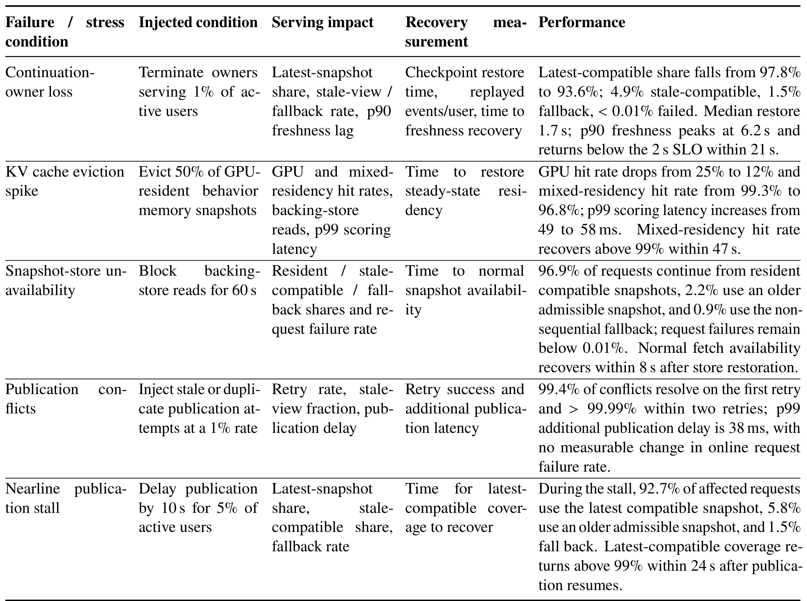
Table 16说明鲁棒性不是“发生故障毫无影响”。终止持有1%活跃用户的continuation owner后，最新兼容占比97.8%到93.6%，4.9%使用较旧兼容状态、1.5%回退，请求失败低于0.01%；中位恢复1.7秒，p90 lag峰值6.2秒，21秒内回到两秒SLO下。驱逐50% GPU驻留快照时，GPU命中25%到12%，混合驻留99.3%到96.8%，评分p99由49到58毫秒，已暂时超出50毫秒目标，47秒内混合命中恢复99%以上。阻断store读取60秒时，96.9%从驻留兼容状态服务、2.2%较旧状态、0.9%回退，恢复store后八秒内正常抓取恢复。1%重复或过期发布冲突中99.4%首重试解决、两次内超过99.99%，额外发布p99为38毫秒。对5%用户延迟发布十秒时，5.8%请求使用较旧状态、1.5%回退，恢复后24秒内最新兼容覆盖超过99%。这些数值来自各自故障实验，分母与正常流量约3%回退不同，不能把差异当作矛盾或直接拼接成一个稳态分布。表内恢复时间既有恢复至某个新鲜度阈值，也有驻留命中与正常fetch恢复，各列不是同一种停机时间。故障负载和注入比例已受控，跨区域大范围故障或日志不可重放并未由这些测试覆盖。
故障结果支持恢复离线化确实降低请求失败耦合，但没有证明SLO在所有扰动下都满足；缓存大规模驱逐已经给出暂时延迟超标。附录还报告中等规模水平扩容：bulk在2倍／4倍容量约96%／90%效率，online四倍仍超过90%，nearline更受热点用户归属与continuation迁移影响。设备利用率仍高而扩容效率下降，说明评估应看有效goodput、新鲜度和延迟约束，而不能只看GPU忙碌。生产更大规模故障、跨地域网络中断、极端热点与双版本长期并存的费用仍未形成充分公开证据。
4. 总结
TransX最值得保留的是一套可检查的计算与状态分解：行为encoder处理“已发生且已可用的历史”，记忆决定多少历史证据暴露给reader，候选融合决定如何按当前目标读取这些证据。训练沿相同边界共享因果前缀和事件KV，服务沿相同边界把可变续接状态$C$与不可变发布状态$V$分离。这样容量分析与工程执行互相对应：扩大历史计算可以主要增加bulk和nearline负载，在线承担的是状态读取与候选交互，而不是把一切扩张都放在请求路径。生产三组A/B和同模型共置对照为这套设计提供了不同层面的证据。
若迁移到推荐精排或广告排序，应先建立准确的可用时间与成熟标签规范，再验证历史前缀共享的前向和梯度等价。多前缀训练不能只看节省重复编码：同一逻辑step内损失归一化与稀疏行梯度合并如果改变，就会连优化目标一起改变。随后测量每轨迹目标数、每状态请求复用、候选fanout和会话内新鲜度敏感性，才有依据决定是否值得物化持久状态。reader可以先保持较小，分别扫描encoder、memory与fusion，使用验证集选择配置，避免把本文“四层后饱和”“记忆大体不增”当作固定架构常数。
部署迁移的首个难点是状态兼容而非cross-attention实现。模型、记忆构造、投影、codec、layout的依赖都要进入兼容判定；预测头独立修改不必无差别重建全部KV，但影响投影或历史表示的修改必须按依赖失效。bulk游标之后新增行为不能漏掉，回滚旧模型也必须有可追上的状态。双版本窗口会临时复制模型与缓存，continuation长尾大小又显著大于读者快照，因此只按8.5 KiB／用户估算容量不成立。论文把近线放CPU也提醒实施者应按实际工作负载选择设备，而不是将架构图中的硬件示意当固定方案。
研究上有四项边界应保持清醒。第一，组件缩放是单产品、固定记忆家族和一遍训练预算下的经验，监督量与优化步数没有完全解耦，不能给出通用数据因果解释。第二，总体log-loss分解为压缩信息与读出错配提供视角，却不直接证明AUC或线上CTR随某个组件单调提高。第三，业务收益包含模型容量、历史上限、表示与执行方式的整体生产切换，matched-FLOPs吞吐对照也不是完整的业务质量归因消融。第四，生成后训练仍受教师偏好、SID有效率和列表误差传播影响，只能认定离线可行；线上成功证据属于Base、Retrieval和Ranking三种。
后续可优先做三组可证伪实验：在相同更新次数下增加独立监督数据，与当前一遍协议对照，确认fusion收益移动是否仍然存在；按会话短期与长期目标分别扫描状态延迟、槽数及candidate reader容量，验证压缩接口是否同时保住即时和稳定兴趣；在本地请求／行为速率下重算online、nearline、bulk、存储、网络和双版本开销，再通过故障注入观察goodput、p99和回退质量，而不是只检查平均吞吐。对于生成式扩展，还需全目录检索和真正独立的用户质量评价，避免把教师一致率或采样池Recall当作最终效果。
这份报告对已有长序列推荐系统的启发，是把“增加多少算力”细化成“增加哪一段算力、由什么事件触发、状态复用多少次”。是否采用完整TransX可以另行决定，但它要求把共享边界、因果信息边界、资源分母和退化契约一起写清楚的做法，适合用作系统设计审查标准。本文记录的是技术学习与研究判断，不把单产品部署数字外推为确定性收益承诺。